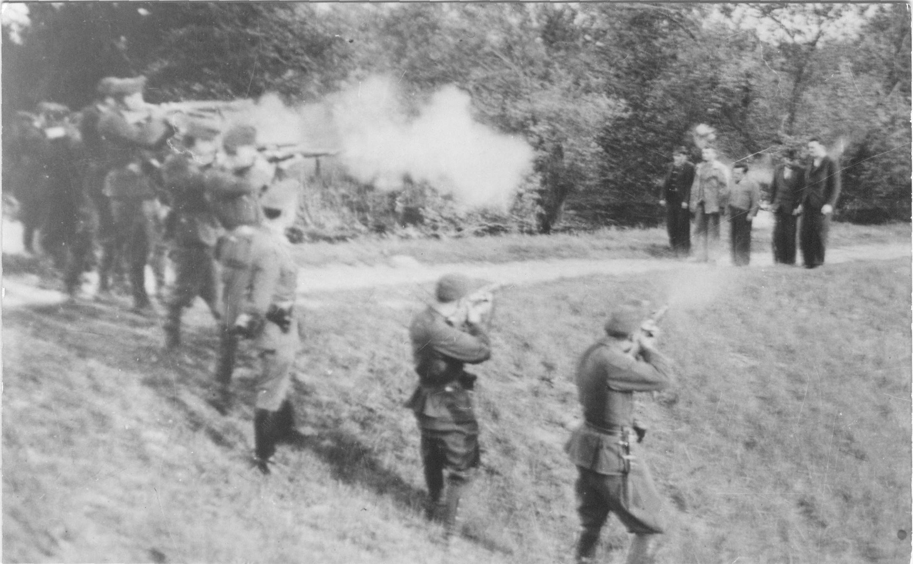

Smrtna kazen v Kraljevini SHS
Ob nastanku Kraljevine SHS leta 1918 so imeli različni deli nove jugoslovanske države različno kazensko pravno tradicijo in zakonodajo. V Sloveniji je veljal avstrijski kazenski zakonik vse do 1. januarja 1930, ko je začel veljati Kazenski zakon za Kraljevino Srbov, Hrvatov in Slovencev. Smrtno kazen je bilo možno izreči v 47 primerih (od tega 24 samo v vojnem času). Kako pogosto so se k usmrtitvam zatekala slovenska sodišča in kolikokrat je krvnik obiskal slovenske kraje, še ni znano. Največ naj bi bilo usmrtitev v mariborskem kaznilniškem dvorišču, kjer je znano, da je bilo usmrčenih osem oseb (med letoma 1923 in 1939) (Česnik,2004,str.32-34).
